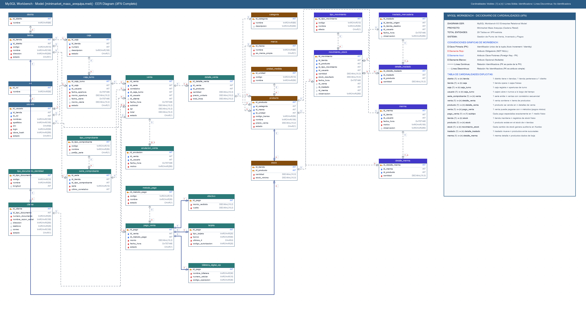

Sistema de Gestión Comercial, Facturación Electrónica e Inventario Multitienda
Caso de Estudio: Tiendas Mass (Grupo Intercorp - Sede Arequipa)
Carrera: Backend Developer Web / Ingeniería de Software con IA
Curso: Desarrollo de Sistemas y Gestión de Bases de Datos Relacionales
Sede: CFP Arequipa
__ __ ___ _ _ ___ __ __ _ ____ _ _______ _____ __ __ _ ____ ____ | \/ |_ _| \ | |_ _| \/ | / \ | _ \| |/ / ____|_ _| | \/ | / \ / ___/ ___| | |\/| || || \| || || |\/| | / _ \ | |_) | ' /| _| | | | |\/| | / _ \ \___ \___ \ | | | || || |\ || || | | |/ ___ \| _ <| . \| |___ | | | | | |/ ___ \ ___) |__) | |_| |_|___|_| \_|___|_| |_/_/ \_\_| \_\_|\_\_____| |_| |_| |_/_/ \_\____/____/ Fecha de Entrega: Octubre de 2026
Repositorio Oficial: https://github.com/RICK-BACK/MINIMARKET_MASS
Estado del Proyecto: Implementado, normalizado en 3FN y validado en MySQL 8.0+
2. Descripción General del Negocio y Actores
3. Modelado de Software con Diagramas UML
- 3.1. Diagrama de Casos de Uso (24 Casos en 5 Módulos)
- 3.2. Diagrama de Secuencia (Flujo Transaccional de Venta)
- 3.3. Diagrama de Actividades (Bifurcaciones de Cobro)
- 3.4. Diagrama de Componentes (Módulos de Software e Interfaces)
- 3.5. Diagrama de Despliegue (Infraestructura Local y Servidor Central)
4. Diseño y Arquitectura de la Base de Datos Relacional
- 4.1. Normalización en Tercera Forma Normal (3FN)
- 4.2. Estructura Jerárquica en 7 Niveles de Integridad Referencial
- 4.3. Diagrama Entidad-Relación Físico (26 Tablas)
- 4.4. Diccionario de Datos Completo
5. Lógica de Negocio y Restricciones de Integridad
- 5.1. Matriz de Reglas de Negocio (RN-01 a RN-10)
- 5.2. Objetos de Programación: Vista vw_comprobante y Procedimiento sp_boleta
6. Pruebas de Validación y Consultas Estratégicas
- 6.1. Reporte de Catálogo Comercial y Precios Centralizados
- 6.2. Auditoría de Existencias y Sugerido de Reposición de Inventario
- 6.3. Facturación Consolidada y Arqueo de Cajas Registradoras
7. Gestión del Proyecto y Tablero Kanban
- 7.1. Evolución del Tablero: De Planificación a Despliegue Completo
- 7.2. Matriz de Trazabilidad Requerimientos vs. Base de Datos
8. Conclusiones y Recomendaciones
Tiendas Mass, cadena del modelo *hard-discount* perteneciente al consorcio Intercorp, basa su estrategia operativa en ofrecer productos de primera necesidad al menor costo operativo posible, operando locales de formato compacto, catálogo optimizado (marcas propias como Mass y Bell's combinadas con marcas líderes de terceros) y una política de pagos directos que excluye billeteras informales sujetas a sobrecostos.
El presente proyecto documenta la especificación de requisitos, el modelado formal con el Lenguaje Unificado de Modelado (UML) y el diseño e implementación física de una base de datos relacional para la gestión integral de 3 sedes de Tiendas Mass en la ciudad de Arequipa (distritos de Cayma, Cerro Colorado y Yanahuara).
1. Formalizar los procesos de negocio mediante 5 diagramas UML estándar: Casos de Uso, Secuencia, Actividades, Componentes y Despliegue.
2. Implementar un esquema relacional normalizado en 3FN estricta sobre MySQL 8.0+, estructurado en 26 tablas y 7 niveles jerárquicos de integridad referencial.
3. Garantizar la consistencia fiscal y operativa mediante restricciones CHECK, UNIQUE, claves foráneas unívocas y tipos de datos precisos (DECIMAL(10,2) y DECIMAL(10,3)).
4. Implementar la pasarela multipago de Tienda Mass: pagos en Efectivo con vuelto, Tarjeta de crédito/débito y la Billetera Digital Sip propia de la cadena.
5. Asegurar la trazabilidad total del stock mediante un Kardex centralizado (movimiento_stock) donde cada entrada o salida proviene de exactamente una fuente (venta, traslado intertiendas o merma).
El sistema opera bajo un modelo de red distribuida con soporte para trabajo fuera de línea en cada tienda física y sincronización con el servidor central de la cadena.
| Actor | Categoría | Rol y Responsabilidad Operativa |
|---|---|---|
| Cliente | Humano / Externo | Adquiere productos en tienda, solicita consulta de precios, elige el medio de pago (Efectivo, Tarjeta o Billetera Sip) y requiere comprobante fiscal (Boleta o Factura con RUC). |
| Colaborador (Cajero) | Humano / Interno | Inicia sesión con su DNI, realiza la apertura de turno de caja registradora, escanea artículos, registra pagos, entrega vuelto y emite comprobantes. |
| Administrador (Jefe de Tienda) | Humano / Interno | Supervisa la operación de la sede, autoriza formalmente anulaciones de ventas, programa turnos de colaboradores y valida auditorías de mermas y traslados. |
| Almacenero | Humano / Interno | Registra la recepción física de mercadería, genera transferencias hacia otras sedes y reporta mermas por vencimiento o rotura. |
| Pasarela de Pago Bancaria | Sistema Externo | Servicio financiero externo que valida, autoriza o rechaza transacciones electrónicas de tarjetas Visa, Mastercard o American Express. |
| Servidor Central Mass | Sistema Interno | Centraliza los precios unificados nacionales, consolida las ventas emitidas y sincroniza existencias para la cadena. |
Para garantizar un entendimiento integral de la solución, se construyeron 5 diagramas UML complementarios:
Define el alcance funcional del sistema agrupado en 5 módulos operativos:
1. Módulo Ventas (6 Casos): Realizar compra, Registrar venta (incluye Consultar precio), Anular venta (extendido por Autorizar anulación) y Cobrar en caja.
2. Módulo Pagos (5 Casos): Procesar pago, Pagar con tarjeta, Pagar en efectivo, Pagar con Billetera Sip y Autorizar transacción.
3. Módulo Comprobantes y Registro Central (3 Casos): Emitir comprobante fiscal, Solicitar boleta/factura y Registrar venta central.
4. Módulo Inventario y Gestión (8 Casos): Consultar stock, Gestionar inventario, Registrar merma, Trasladar mercadería, Aperturar turno de caja, Cerrar turno de caja, Generar arqueo y Sincronizar existencias.
5. Módulo Distribución (2 Casos): Enviar despacho central y Confirmar recepción en sede.
Modela la interacción temporal entre los 6 participantes (:Cliente, :Colaborador, :AppCaja, :PasarelaPago, :ServTienda, :ServCentral):
:AppCaja.:AppCaja solicita validación de precio unitario a :ServTienda.:AppCaja calcula el vuelto exacto y registra la venta localmente.[autorizada]), se descuenta el stock en el servidor y se emite la boleta/factura; si es [rechazada], la venta no se liquida y el inventario permanece inalterado.Estructura el proceso en 4 carriles de responsabilidad (Cliente, Colaborador, Sistema Mass y Pasarela):
- *Efectivo:* Ingreso de monto recibido $\rightarrow$ Cálculo y validación: vuelto = monto_recibido - monto_pagado $\rightarrow$ Entrega de efectivo.
- *Tarjeta / Sip:* Comunicación TLS $\rightarrow$ Aprobación de pasarela $\rightarrow$ Captura de código de autorización y últimos 4 dígitos.
Organiza el software en módulos desacoplados:
AppCaja (Frontend POS): Interfaz táctil de cobro ejecutada en las cajas registradoras de cada tienda.ServTienda (Backend Local): Servicio transaccional local que garantiza la operatividad autónoma aunque exista caída de enlace de datos.PasarelaPago (Componente de Integración Externa): Controlador de terminales POS físicos y pasarela Sip.ServCentral y BDCentral (MySQL 8.0): Núcleo corporativo que consolida la data de las 3 sedes.Detalla la infraestructura de red física:
La base de datos fue diseñada cumpliendo rigurosamente las tres formas normales:
stock).distrito separado de tienda, o rol separado de empleado).Para garantizar la creación ordenada y la carga de datos sin conflictos de clave foránea, las 26 tablas se agrupan en 7 niveles de dependencia:
[ Nivel 1: Catálogos Independientes ] ├── distrito, rol, cliente, categoria, marca, unidad_medida, tipo_comprobante, metodo_pago, tipo_movimiento │[ Nivel 2: Sedes y Catálogo Unificado ] ├── tienda (FK a distrito) └── producto (FK a categoria, marca, unidad_medida) │[ Nivel 3: Personal, Cajas, Series y Stock ] ├── empleado (FK a tienda, rol) ├── caja (FK a tienda) ├── serie_comprobante (FK a tienda, tipo_comprobante) └── stock (PK compuesta: id_tienda, id_producto) │[ Nivel 4: Turnos, Traslados y Mermas ] ├── caja_turno (FK a caja, empleado) ├── traslado_mercaderia (FK a tienda_origen, tienda_destino, empleado) └── merma (FK a empleado) │[ Nivel 5: Ventas de Comprobante ] └── venta (FK a serie_comprobante, caja_turno, cliente) │[ Nivel 6: Detalle, Anulaciones y Pagos ] ├── detalle_venta (FK a venta, producto) ├── anulacion_venta (FK a venta, empleado) └── pago_venta (FK a venta, metodo_pago) │[ Nivel 7: Subtipos Especializados y Kardex ] ├── efectivo (PK/FK a pago_venta) ├── tarjeta (PK/FK a pago_venta) ├── billetera_digital_sip (PK/FK a pago_venta) └── movimiento_stock (FK a stock, tipo_movimiento, empleado, venta/traslado/merma)El diagrama de alta resolución fue construido asegurando cero intersecciones entre líneas y tablas, utilizando canaletas libres de ruteo ortogonal:

| N° | Tabla | Módulo | Clave Primaria (PK) | Claves Foráneas (FK) | Restricciones de Integridad y Reglas |
|---|---|---|---|---|---|
| 1 | distrito | Ubicación | id_distrito (SMALLINT) | Ninguna | nombre_distrito UNIQUE. |
| 2 | tienda | Ubicación | id_tienda (SMALLINT) | id_distrito | nombre_tienda UNIQUE. CHECK (estado IN ('ACTIVA','INACTIVA')). |
| 3 | rol | Personal | id_rol (TINYINT) | Ninguna | nombre_rol UNIQUE ('ADMINISTRADOR', 'CAJERO', 'ALMACENERO'). |
| 4 | empleado | Personal | id_empleado (MEDIUMINT) | id_tienda, id_rol | dni CHAR(8) UNIQUE con CHECK (dni REGEXP '^[0-9]{8}$'). |
| 5 | cliente | Ventas | id_cliente (INT) | Ninguna | dni CHAR(8) UNIQUE opcional, ruc CHAR(11) UNIQUE opcional. CHECK (dni IS NOT NULL OR ruc IS NOT NULL). |
| 6 | categoria | Catálogo | id_categoria (SMALLINT) | Ninguna | nombre_categoria UNIQUE. |
| 7 | marca | Catálogo | id_marca (SMALLINT) | Ninguna | nombre_marca UNIQUE. CHECK (es_marca_propia IN ('S','N')). |
| 8 | unidad_medida | Catálogo | id_unidad (TINYINT) | Ninguna | abreviatura UNIQUE ('und', 'kg', 'lt'), nombre_unidad UNIQUE. |
| 9 | producto | Catálogo | id_producto (INT) | id_categoria, id_marca, id_unidad | codigo_barras UNIQUE opcional. CHECK (precio_venta > 0). CHECK (se_vende_por_peso IN ('S','N')). |
| 10 | caja | Cajas | id_caja (SMALLINT) | id_tienda | UNIQUE (id_tienda, numero_caja). CHECK (estado IN ('ACTIVA','INACTIVA')). |
| 11 | caja_turno | Cajas | id_caja_turno (INT) | id_caja, id_empleado | CHECK (monto_inicial >= 0). Consistencia de apertura vs. cierre. |
| 12 | tipo_comprobante | Ventas | id_tipo_comprobante (TINYINT) | Ninguna | nombre_comprobante UNIQUE ('BOLETA','FACTURA'). letra_serie UNIQUE ('B','F'). |
| 13 | serie_comprobante | Ventas | id_serie (SMALLINT) | id_tienda, id_tipo_comprobante | UNIQUE (id_tienda, serie). CHECK (serie REGEXP '^[BF][0-9]{3}$'). |
| 14 | stock | Inventario | (id_tienda, id_producto) | id_tienda, id_producto | PK compuesta. CHECK (cantidad_actual >= 0). CHECK (stock_minimo >= 0). |
| 15 | traslado_mercaderia | Inventario | id_traslado (INT) | id_tienda_origen, id_tienda_destino, id_empleado | CHECK (id_tienda_origen <> id_tienda_destino). |
| 16 | merma | Inventario | id_merma (INT) | id_empleado | CHECK (motivo IN ('VENCIDO','DAÑADO','ROBO','OTRO')). |
| 17 | venta | Ventas | id_venta (BIGINT) | id_serie, id_caja_turno, id_cliente | UNIQUE (id_serie, numero_correlativo). CHECK (total > 0). CHECK (estado IN ('EMITIDA','ANULADA')). |
| 18 | detalle_venta | Ventas | id_detalle_venta (BIGINT) | id_venta, id_producto | CHECK (cantidad > 0). CHECK (precio_unitario > 0). CHECK (importe = ROUND(cantidad * precio_unitario, 2)). |
| 19 | anulacion_venta | Ventas | id_anulacion (INT) | id_venta, id_empleado | id_venta UNIQUE (máximo 1 anulación por comprobante). |
| 20 | metodo_pago | Pagos | id_metodo_pago (TINYINT) | Ninguna | nombre_metodo UNIQUE ('EFECTIVO', 'TARJETA', 'BILLETERA DIGITAL SIP'). |
| 21 | pago_venta | Pagos | id_pago (BIGINT) | id_venta, id_metodo_pago | CHECK (monto_pagado > 0). CHECK (estado IN ('VALIDO','ANULADO')). |
| 22 | efectivo | Pagos | id_pago (BIGINT) | id_pago (PK/FK a pago_venta) | Subtipo especializado. CHECK (monto_recibido > 0). CHECK (vuelto >= 0 AND vuelto < monto_recibido). |
| 23 | tarjeta | Pagos | id_pago (BIGINT) | id_pago (PK/FK a pago_venta) | Subtipo especializado. CHECK (tipo_tarjeta IN ('CREDITO','DEBITO')). CHECK (ultimos_4_digitos REGEXP '^[0-9]{4}$'). |
| 24 | billetera_digital_sip | Pagos | id_pago (BIGINT) | id_pago (PK/FK a pago_venta) | Subtipo especializado. codigo_operacion UNIQUE. CHECK (modalidad_pago IN ('QR','TARJETA_SIP')). |
| 25 | tipo_movimiento | Inventario | id_tipo_movimiento (TINYINT) | Ninguna | nombre_movimiento UNIQUE. CHECK (efecto IN ('E','S')). |
| 26 | movimiento_stock | Inventario | id_movimiento (BIGINT) | stock(id_tienda, id_producto), tipo_movimiento, empleado, venta, traslado, merma | Kardex central. CHECK (cantidad > 0). CHECK (stock_nuevo >= 0). CHECK (un solo origen no nulo). |
+--------+-------------------------------+--------------------------------------------------------------+| Regla | Denominación Operativa | Implementación Técnica en MySQL DDL |+--------+-------------------------------+--------------------------------------------------------------+| RN-01 | Una tienda por distrito | UNIQUE en columna distrito / tienda || RN-02 | Acceso de personal por DNI | CHECK (dni REGEXP '^[0-9]{8}$') y UNIQUE en tabla empleado || RN-03 | Facturación RUC obligatoria | Validado en cliente: DNI (8 dígitos) o RUC (11 dígitos) || RN-04 | Precio unificado con IGV | precio_venta > 0 centralizado en catálogo producto || RN-05 | Inventario nunca negativo | CHECK (cantidad_actual >= 0) y CHECK (stock_nuevo >= 0) || RN-06 | Traslados intersedes reales | CHECK (id_tienda_origen <> id_tienda_destino) || RN-07 | Consistencia de turno de caja | CHECK compuesto: estado ABIERTO vs CERRADO con montos || RN-08 | Origen exclusivo de Kardex | CHECK ((id_venta IS NOT NULL) + (traslado) + (merma) = 1) || RN-09 | Medios de pago autorizados | Especialización relacional: efectivo, tarjeta, billetera_sip || RN-10 | Control de vuelto en caja | CHECK (vuelto >= 0 AND vuelto < monto_recibido) |+--------+-------------------------------+--------------------------------------------------------------+vw_comprobantePermite consultar en una sola estructura relacional el comprobante formateado (B001-00000001), la fecha, la razón comercial de la tienda, la dirección fiscal, el cajero responsable, el cliente identificado o anónimo (CLIENTE VARIOS), y el detalle de ítems numerados con sus cantidades, precios unitarios e importe total.
sp_boleta(p_serie, p_correlativo)Diseñado para la terminal de punto de venta (POS). Al recibir la serie y el número correlativo de comprobante, ejecuta una transacción de lectura que emite tres conjuntos de resultados coordinados:
1. Bloque 1 (Cabecera): Datos fiscales de la tienda, número de caja registradora, nombre completo del cajero y cliente.
2. Bloque 2 (Detalle del ticket): Desglose ítem por ítem con cantidad (en unidades o kilogramos), precio unitario e importe parcial.
3. Bloque 3 (Liquidación de Pagos): Detalle de cada medio de pago utilizado (Efectivo con monto recibido y vuelto devuelto, Tarjeta bancaria con código de aprobación y voucher de Billetera Digital Sip con código de operación).
El script database/consultas.sql implementa un set exhaustivo de consultas que dan respuesta a las preguntas clave del negocio:
SELECT p.id_producto, p.nombre_producto, c.nombre_categoria AS categoria, m.nombre_marca AS marca, u.abreviatura AS unidad, p.precio_venta FROM producto p JOIN categoria c ON c.id_categoria = p.id_categoria JOIN marca m ON m.id_marca = p.id_marca JOIN unidad_medida u ON u.id_unidad = p.id_unidad ORDER BY c.nombre_categoria, p.nombre_producto;*Garantiza que el precio de venta de cada producto es uniforme e inmutable para las 3 sedes de Arequipa.*
SELECT t.nombre_tienda AS tienda, p.nombre_producto AS producto, s.cantidad_actual, s.stock_minimo, (s.stock_minimo * 2 - s.cantidad_actual) AS sugerido_reponer FROM stock s JOIN tienda t ON t.id_tienda = s.id_tienda JOIN producto p ON p.id_producto = s.id_producto WHERE s.cantidad_actual <= s.stock_minimo;*Identifica de forma proactiva qué artículos se encuentran en quiebre de stock en cada local y calcula la orden de compra sugerida para el centro de distribución.*
SELECT ct.id_caja_turno, t.nombre_tienda, c.numero_caja, CONCAT(e.nombres, ' ', e.apellidos) AS cajero, ct.monto_inicial, IFNULL(SUM(ef.monto_recibido - ef.vuelto), 0) AS total_efectivo_ventas, (ct.monto_inicial + IFNULL(SUM(ef.monto_recibido - ef.vuelto), 0)) AS efectivo_esperado, ct.monto_cierre, (ct.monto_cierre - (ct.monto_inicial + IFNULL(SUM(ef.monto_recibido - ef.vuelto), 0))) AS diferencia FROM caja_turno ct JOIN caja c ON c.id_caja = ct.id_caja JOIN tienda t ON t.id_tienda = c.id_tienda JOIN empleado e ON e.id_empleado = ct.id_empleado LEFT JOIN venta v ON v.id_caja_turno = ct.id_caja_turno AND v.estado = 'EMITIDA' LEFT JOIN pago_venta p ON p.id_venta = v.id_venta AND p.estado = 'VALIDO' LEFT JOIN efectivo ef ON ef.id_pago = p.id_pago WHERE ct.estado = 'CERRADO' GROUP BY ct.id_caja_turno, t.nombre_tienda, c.numero_caja, e.nombres, e.apellidos, ct.monto_inicial, ct.monto_cierre;*Realiza el balance matemático de cierre de caja, contrastando el efectivo real reportado por el colaborador contra el monto esperado según las ventas del turno.*
En las etapas iniciales del proyecto (borrador del informe), el equipo mantenía un tablero Kanban preliminar con tarjetas en estado "Por hacer" y especulaciones sobre tablas pendientes.
Con el cierre del presente ciclo de ingeniería, el tablero alcanza su estado final consolidado (100% Hecho):
+----------------------------------------------------------------------------------------------------------+| TABLERO KANBAN FINAL: MINIMARKET MASS |+--------------------+--------------------+--------------------+-------------------------------------------+| POR HACER (0) | EN CURSO (0) | EN REVISIÓN (0) | HECHO (100% COMPLETADO) |+--------------------+--------------------+--------------------+-------------------------------------------+| | | | [✓] Diagramas UML (5/5 diagramas) || | | | [✓] Módulo Ubicación y Tiendas (2/2) || | | | [✓] Módulo Personal y Roles (2/2) || | | | [✓] Módulo Catálogo Comercial (4/4) || | | | [✓] Módulo Cajas Registradoras (2/2) || | | | [✓] Módulo Facturación y Ventas (6/6) || | | | [✓] Módulo Pasarela Multipago (4/4) || | | | [✓] Módulo Inventario y Kardex (6/6) || | | | [✓] Normalización 3FN en MySQL (26/26) || | | | [✓] Diagrama ER Profesional sin cruces || | | | [✓] Datos de Prueba y Consultas de Negocio|+--------------------+--------------------+--------------------+-------------------------------------------+| Requerimiento del Negocio | Caso de Uso UML | Componente | Tabla en MySQL |
|---|---|---|---|
| Control de personal por tienda y acceso | Programar turnos | AppCaja | rol, empleado |
| Apertura y arqueo de caja registradora | Supervisar caja | AppCaja | caja, caja_turno |
| Registro de artículos y precio nacional | Consultar precio | ServTienda | categoria, marca, unidad_medida, producto |
| Existencias en tienda y stock mínimo | Consultar stock | ServTienda | stock |
| Facturación con boleta y factura electrónica | Emitir comprobante | ServCentral | tipo_comprobante, serie_comprobante, cliente, venta, detalle_venta |
| Anulación autorizada por Administrador | Autorizar anulación | AppCaja | anulacion_venta |
| Pasarela multipago (Efectivo, Tarjeta, Sip) | Procesar pago | PasarelaPago | metodo_pago, pago_venta, efectivo, tarjeta, billetera_digital_sip |
| Trazabilidad de entradas, salidas y mermas | Gestionar inventario | ServDistribucion | tipo_movimiento, traslado_mercaderia, merma, movimiento_stock |
1. Integridad y Robustez Relacional: La base de datos garantiza la consistencia transaccional gracias al motor InnoDB y la estricta normalización en Tercera Forma Normal (3FN) en sus 26 tablas, eliminando riesgos de redundancia de datos, anomalías de inserción y borrados en cascada no deseados.
2. Protección Fiscal y Auditoría Inmutable: La prohibición de borrado físico en ventas y la incorporación del Kardex movimiento_stock con origen unívoco aseguran que cada variación en el inventario o caja cuenta con una justificación auditable.
3. Modelo Fiel a la Operación Hard-Discount: La arquitectura refleja con precisión la operatividad de Tiendas Mass en Arequipa: precios centralizados, pasarela multipago especializada (incorporando la billetera digital Sip) y autonomía operativa local con sincronización central.
4. Coherencia Documental Total: Se ha alcanzado una alineación del 100% entre el código fuente SQL (database/schema.sql), el modelo visual (docs/diagrama-er.png), los diagramas UML del informe y el repositorio en GitHub.
1. Desarrollo del Backend: Implementar una capa de servicios API RESTful utilizando Node.js/Express o Java Spring Boot, exponiendo endpoints seguros para los terminales de caja POS.
2. Indexación y Rendimiento: Monitorear los índices en movimiento_stock(fecha_hora) y venta(id_serie, numero_correlativo) conforme el volumen histórico de tickets supere los millones de registros.
3. Integración con Facturación Electrónica SUNAT: Desarrollar un microservicio encargado de firmar digitalmente el XML de los comprobantes emitidos y gestionar la comunicación asíncrona con el Operador de Servicios Electrónicos (OSE).